景区拥挤，拍摄受限
热门机位人潮密集，三脚架和自拍杆常常展不开；最好的光影只有几分钟，拍摄很容易仓促杂乱。

Your Sky For You 在景区定点部署全自动、无人值守、合规安全的智能机库。游客不需要买无人机，不需要会操控，也不需要飞行执照。整个体验被压缩成两个动作：选一个点位，按一下。
景区定点部署，统一空域管控，杜绝黑飞风险。
无需设备、无需操控、无需飞行执照。
和专业航拍相比，门槛被拿掉了，画质与视角反而更稳定。
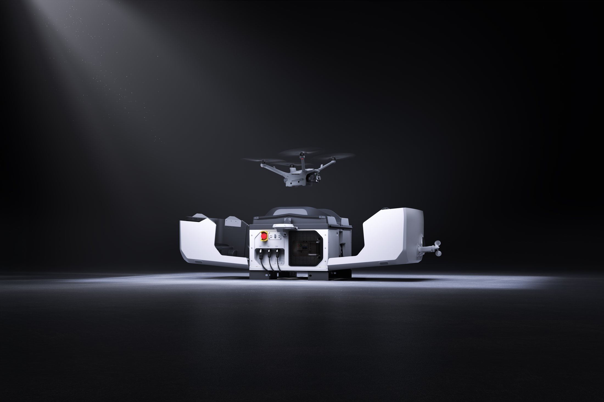
| 维度 | 传统航拍 | YOUR SKY |
|---|---|---|
| 设备 | 自购无人机与电池 | 景区机库，无需购买 |
| 空域 | 私人飞行，多地禁飞 | 定点部署，统一管控 |
| 技能 | 需要长期练习 | AI 全流程，零门槛 |
| 成片 | 依赖个人经验 | 稳定构图与光影 |
| 留存 | 本地相册，难以回看 | 3D 地球相册，坐标可回看 |
SAME LANDSCAPE · DIFFERENT ALTITUDE
旅行途中，人人都想留下一张「我来过」的照片。但举起手机，得到的常常是人潮、平视，和一张没有自己的风景。景区拥挤、视角单一、空域禁飞、专业能力——这不是游客审美不行，而是设备、空域和技术一起把专业航拍变成了少数人的特权。
热门机位人潮密集，三脚架和自拍杆常常展不开；最好的光影只有几分钟，拍摄很容易仓促杂乱。
一个人旅行时，手持机位固定、取景范围狭窄，人与全景很难同框。想要「人在景中」的高级感，最后只能靠运气。
核心景区空域管控严格，私人无人机禁止飞行，即便买了设备，也常常无处可飞。
构图、光影、机位都依赖长期经验。普通用户反复拍摄，画面依然扁平、缺少层次，最后就变成一句「拍不出来」。
挡住的是影像平权：没有设备、没有技术的人，本该也能拥有专业视角。
少了一种可消费、可传播的体验增量，游客停留时间与二次传播都被浪费。
大量普通人的旅行记忆，无法以真实坐标沉淀下来，成为可回看的地理资产。
所以我们做这件事，不只是看到一个产品机会，而是把它当成一次影像平权。
看看它拍下了什么→每张作品自动绑定经纬度、机型、飞行高度，以及 ISO、光圈、快门这些参数。你可以在全球点位之间浏览，按风景分类检索，也可以回看一整段旅途轨迹。它不是更花哨的相册，而是可以重新走一遍的地理记忆。
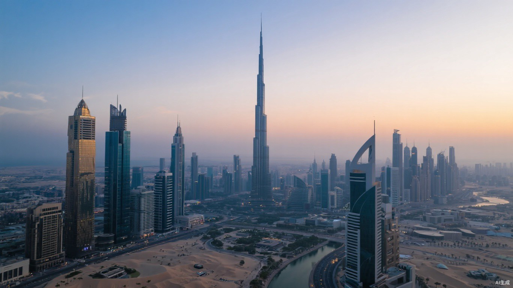
DUBAI ACTIVE沙漠与海湾之间，828 米的高度刺破暮色。
铁塔亮灯的瞬间，整条塞纳河变成金色。
帝国大厦亮起灯，万家灯火同时回答黄昏。
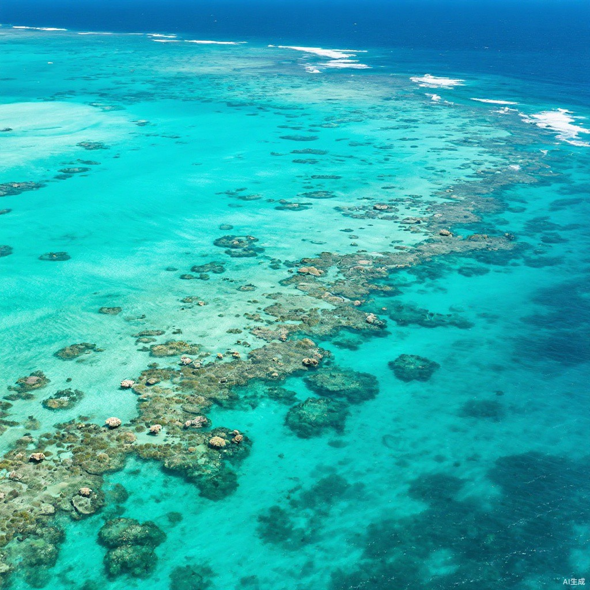
MALDIVES ACTIVE深浅不一的蓝，是海底地形写下的等高线。
一圈白沙把海分成两种颜色，也把时间分成两层。
白墙蓝顶沿着火山崖壁层层落向海面。
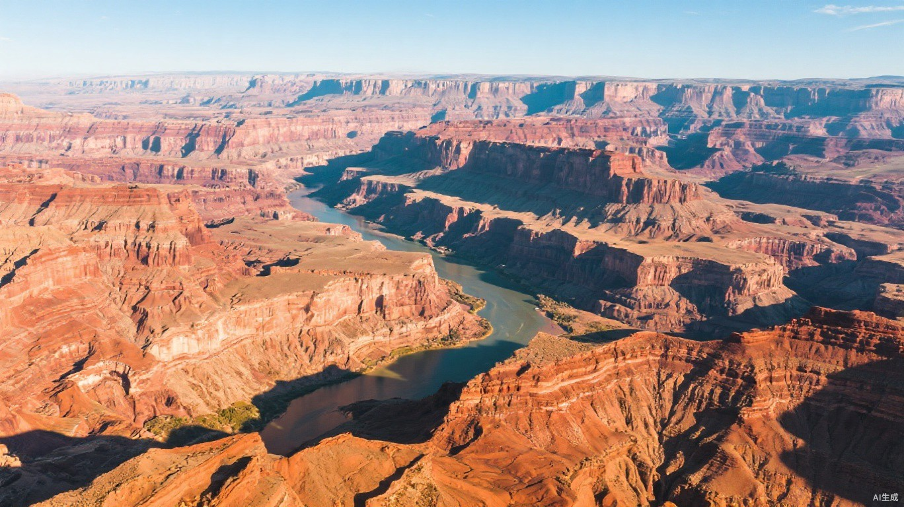
ALPS ACTIVE云层之下，山脊像被光削出的刀锋。
浮冰把湖面切成缓慢移动的拼图。
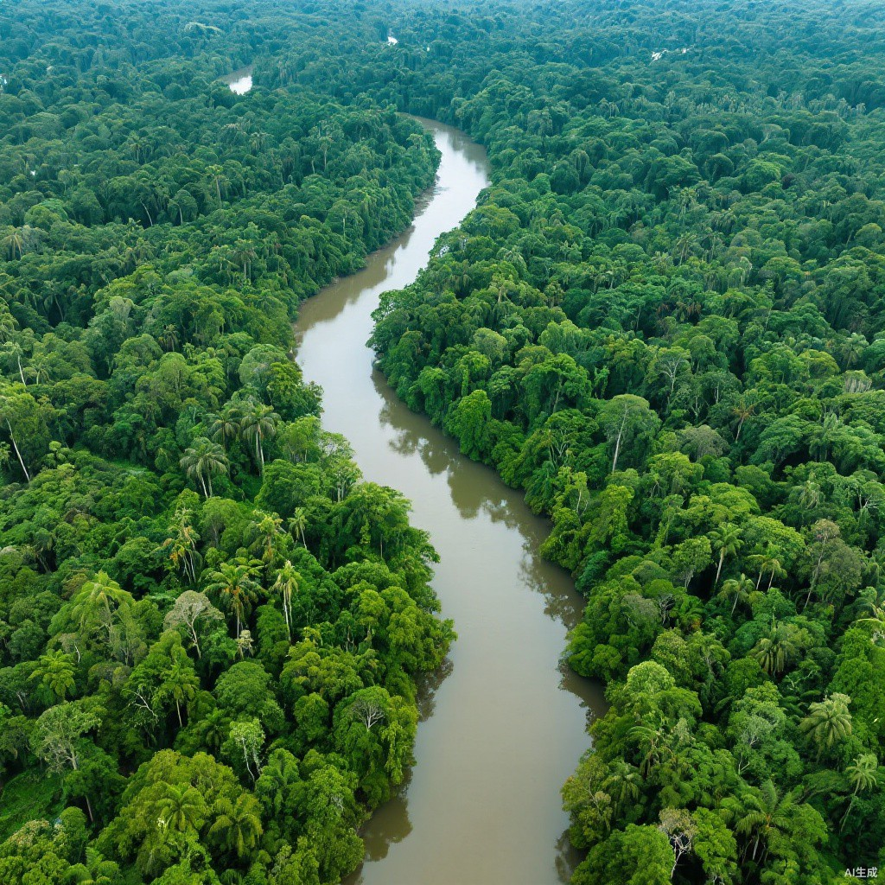
AMAZON ACTIVE一条河在绿色里反复转弯，直到看不见尽头。
从预约到返航，四步全部无人干预，用户端只剩「选」和「按」。
游客选择景区点位和时段，系统分配最近的机库。
BOOKING机库开舱，无人机按预设航线自动起飞。
TAKE-OFFAI 识别场景，自动完成构图、曝光和连拍。
CAPTURE无人机精准回舱、自主补电，原片自动回传云端。
RETURN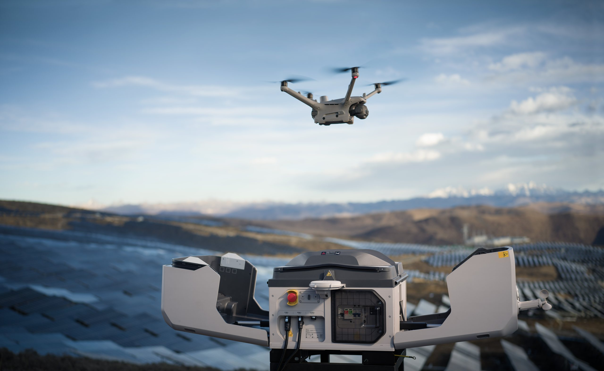
飞行这件事，我们选择交给已经成熟的工业体系，而不是自己造飞行器。大疆司空平台负责任务调度、航线规划、远程监控与多机集群；硬件侧使用大疆机场系列与行业级无人机，保证飞行稳定、画质与全天候运行。
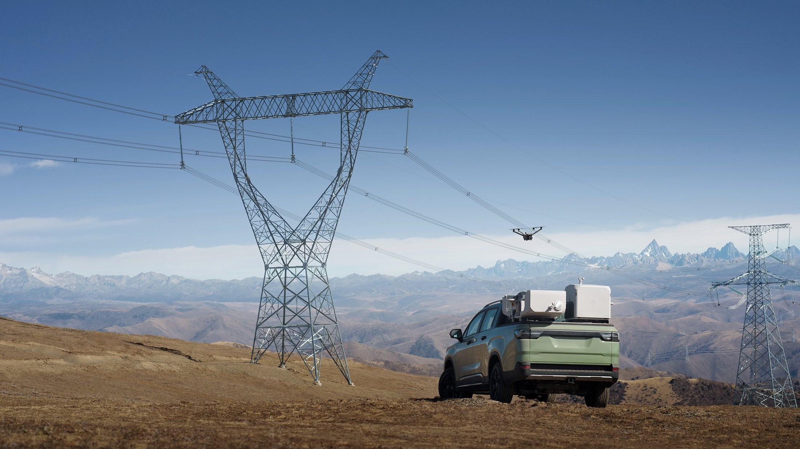
| 参数 | 大疆机场 3 | 大疆机场 2 |
|---|---|---|
| 整机重量 | 55 kg | 34 kg |
| 防护等级 | IP56 | IP55 |
| 工作温度 | -30°C ~ 50°C | -25°C ~ 45°C |
| 最大运行海拔 | 4,500 m | 4,000 m |
| 充电时间 | 27 min（15%→95%） | 32 min（20%→90%） |
| 适配飞行器 | Matrice 4D / 4TD | Matrice 3D / 3TD |
| 图传天线 | 内置九天线 | 内置四天线 |
| 云平台 | 司空 2 / 上云 API | 司空 2 / 上云 API |
数据来源：大疆行业应用官方技术参数
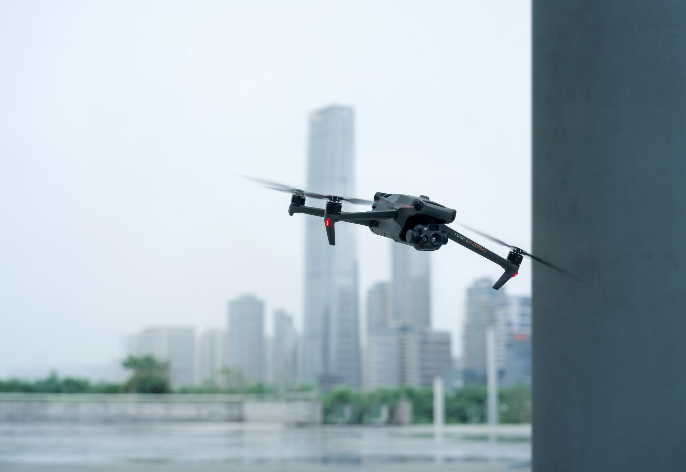
4/3 CMOS 广角 2,000 万像素，中长焦与长焦均 4,800 万像素；54 分钟最长飞行，激光测距最远 1,800 米。
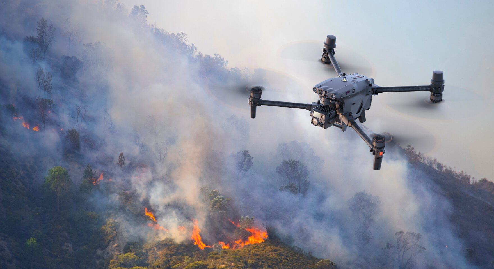
在 4D 基础上增加 640×512 热成像与近红外补光，支持夜间与热异常场景的巡检级作业。
把飞行安全交给成熟平台，团队专注体验与算法。
DJI DOCK 3 SPECS ↗硬件自动化、前端可视化、AI 视觉与大模型四层协同，软硬件深度联动。横向由 DeepSeek v4 辅助前端 UI 逆向开发。
GLM-5.3-Flash 做图像理解与文案生成，让每张照片配得上一句诗。
场景识别、智能构图、光影优化三类算法，在快门之前完成专业决策。
Three.js 三维地球与 Blender 高精度模型，覆盖移动端与云端界面。
大疆司空 FlightHub 2 飞控、行业级无人机与标准化机库完成调度与起降。

一块解决「怎么用」，一块解决「怎么看见」。自研不是重复造轮子，而是把体验的关键环节握在自己手里。
我们对标高端可视化产品，拆解界面与交互范式，自动适配移动端与云端布局，解决迭代慢、适配差、交互生硬的问题。
自建高精度地球模型，还原地貌纹理，让照片按经纬度精准挂载、按地域分类、按轨迹渲染；再用轻量化算法保证缩放、切换与检索流畅。
按下快门之前，三类算法已经替用户做完了专业决策。用户只需要站在风景里。
先看懂山川、云海、日落、城市海岸线和人文建筑，匹配不同的拍摄逻辑。
RECOGNITION内置摄影美学模型，自适应黄金构图、全景构图与人像融合构图。
COMPOSITION实时感知光强和角度，自动调节参数与成片色调，保留现场氛围。
EXPOSURE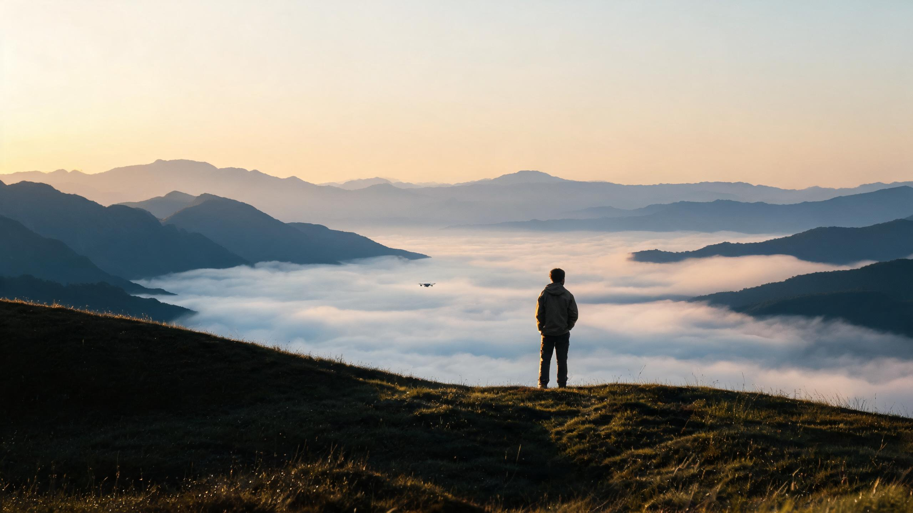
GLM-5.3-Flash 先做图像理解，解析风景元素、光影氛围、场景风格与画面层次；再结合拍摄地点、时节和氛围，生成古风诗句、文艺文案或治愈短句。
原片自动回传云端
解析元素、光影与层次
秒级生成专属文案
SECONDS · MULTI-STYLE · PER PHOTO
云开千嶂出
风过一湖平
从合规到成片，从留存到文案，一套系统覆盖完整链路。
景区定点部署、统一空域管控，杜绝黑飞风险。
无需设备、无需操控、无需飞行执照。
智能构图、光影优化、场景自适应拍摄。
作品钉在真实坐标上，可视化留存与回看旅途。
图像智能分析，生成专属诗句与分享文案。
我们不只是做一台更好用的相机，而是在重新分配「看见风景」的能力。机库网络一旦成为景区基础设施，受益者就不只是游客。
从「拍不到」到「零门槛拥有专业航拍」。
从「收门票」到「提供可传播的体验增量」。
从「少数人的玩具」到「可被调用的公共能力」。
共享机库天然比「人手一台无人机」更轻。我们把这个结构优势，延伸成一套可被检查的环境、社会与治理承诺。
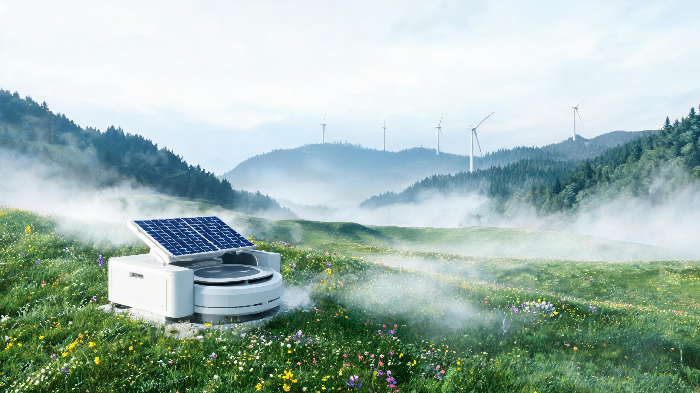
以上为运营目标与承诺，非已完成的第三方认证。
在核心景区部署首台智能机库，跑通预约、拍摄、返航的完整闭环。
以标准化机库与统一空域管控，把一个景区的经验复制到更多点位。
连接城市与文旅目的地，让天际视角成为可被调用的基础设施。